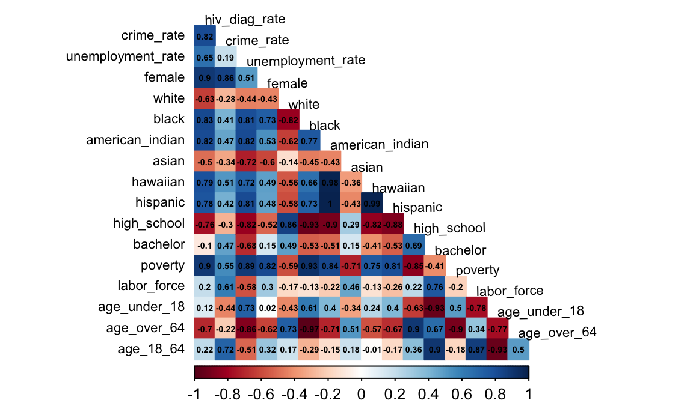
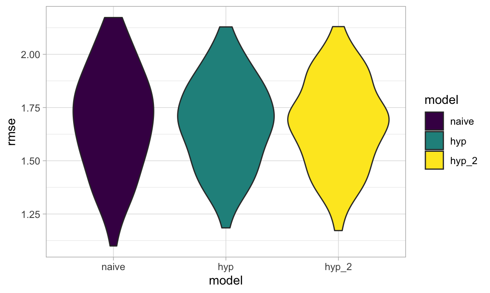

library(tidyverse)
library(plotly)
library(corrplot)
library(geepack)
library(fastDummies)
library(modelr)
library(mgcv)
knitr::opts_chunk$set(
fig.width = 6,
fig.asp = .6,
out.width = "90%"
)
theme_set(theme_minimal() + theme(legend.position = "bottom"))
options(
ggplot2.continuous.colour = "viridis",
ggplot2.continuous.fill = "viridis"
)
scale_colour_discrete = scale_colour_viridis_d
scale_fill_discrete = scale_fill_viridis_d
set.seed(1)rate_complete_df = read_csv('./data/rate_complete.csv')Since our outcome, HIV Diagnoses rate, is calculated using a count variable (number of HIV Diagnoses) repeated over 2013-2019, we’ll model it using Generalized Estimating Equation with a Poisson link function.
rate_complete_df %>%
ggplot(aes(x = hiv_diag_rate)) +
geom_density() +
theme_light() +
labs(x = "HIV Diagnoses Rate",
y = "Count",
title = "Distribution of HIV Diagnoses Rate") +
theme(plot.title = element_text(hjust = 0.5))The data we are using includes the following variables:
year The year of HIV diagnosis measured.hiv_diag_rate The HIV diagnosis rate.crime_rate The crime rate.unemployment_rate The unemployment rate.borough_cat The name of borough.female The percentage of female within each borough.white The percentage of population with Race categorized as White within each borough.black The percentage of population with Race categorized as Black or African American within each borough.american_indian The percentage of population with Race categorized as American Indian and Alaska Native within each borough.asian The percentage of population with Race categorized as Asian within each borough.hawaiian The percentage of population with Race categorized as Native Hawaiian and Other Pacific Islander within each borough.hispanic The percentage of population with Race categorized as Hispanic or Latino within each borough.high_school The percentage of people age 25 years+, 2014-2018, with Race categorized as High school graduate or higher degree within each borough.bachelor The percentage of population with education categorized as Bachelor’s degree or higher degree within each borough.poverty The percentage of population in poverty within each borough.labor_force The percentage of people age 16 years+, 2014-2018, in civilian labor force.age_under_18 The percentage of population under 18 years.age_over_64 The percentage of population over 64 years.age_18_64 The percentage of population between 18 and 64 years.rate_complete_df %>%
drop_na() %>%
select(-X1, -aids_rate, -plwha_rate, -death_rate, -borough_cat, -year) %>%
cor() %>%
corrplot(type = "lower",
method = "color",
addCoef.col = "black",
diag = FALSE,
number.cex = .45,
insig = "blank" ,
tl.col = "black",
tl.cex = .7,
tl.srt = 1
)
We found that several predictors are highly correlated with each other, which should not be included in the model simultaneously, such as:
crime_rate and female (r=0.87)white and black (r=-0.82)american_indian and hawaiian (0.98)high_school and black (r=-0.93)age_over_64 and black (r=-0.97)Based on our preliminary analysis and the correlation matrix, we propose the following models:
borough_cat, year, black, Asian, crime_rate, unemployment_rate, bachelor and age_18_64.In addition, we propose a baseline model:
borough_cat to predict HIV diagnosis rate.naive_model =
geeglm(formula = hiv_diag_rate ~ year,
data = rate_complete_df,
family = poisson,
id = borough_cat,
corstr = "ar1")
rate_df =
rate_complete_df %>%
filter(!year %in% c(2011,2012))
hyp_model =
geeglm(hiv_diag_rate ~
year + crime_rate + unemployment_rate,
id = borough_cat,
data = rate_df,
family = poisson,
corstr = "ar1")
hyp_model_2 =
geeglm(hiv_diag_rate ~
year + crime_rate + unemployment_rate +
black + asian + bachelor + age_18_64,
id = borough_cat,
data = rate_df,
family = poisson,
corstr = "ar1")cv_df =
crossv_mc(rate_df, 100) %>%
mutate(
train = map(train, as_tibble),
test = map(test, as_tibble))
cv_df =
cv_df %>%
mutate(
naive_model = map(train, ~geeglm(
formula = hiv_diag_rate ~ borough_cat,
family = poisson,
id = borough_cat,
corstr = "ar1",
data = .x)),
hyp_model = map(train, ~geeglm(hiv_diag_rate ~
borough_cat + year +
crime_rate + unemployment_rate,
id = borough_cat,
family = poisson,
corstr = "ar1",
data = .x)),
hyp_model_2 = map(train, ~geeglm(hiv_diag_rate ~
borough_cat + year,
id = borough_cat,
family = poisson,
corstr = "ar1",
data = .x))
) %>%
mutate(
rmse_naive = map2_dbl(naive_model, test, ~rmse(model = .x, data = .y)),
rmse_hyp = map2_dbl(hyp_model, test, ~rmse(model = .x, data = .y)),
rmse_hyp_2 = map2_dbl(hyp_model_2, test, ~rmse(model = .x, data = .y)))Compare models using cross-validated prediction error
cv_df %>%
select(starts_with("rmse")) %>%
pivot_longer(
everything(),
names_to = "model",
values_to = "rmse",
names_prefix = "rmse_") %>%
mutate(model = fct_inorder(model)) %>%
ggplot(aes(x = model, y = rmse)) +
geom_violin(aes(fill = model)) +
theme_light()
cv_df %>%
select(starts_with("rmse")) %>%
pivot_longer(
everything(),
names_to = "model",
values_to = "rmse",
names_prefix = "rmse_") %>%
group_by(model) %>%
summarize(avg_rmse = mean(rmse)) %>%
knitr::kable()| model | avg_rmse |
|---|---|
| hyp | 1.675521 |
| hyp_2 | 1.674595 |
| naive | 1.688972 |
hyp_model_2 %>%
broom::tidy() %>%
knitr::kable()| term | estimate | std.error | statistic | p.value |
|---|---|---|---|---|
| (Intercept) | 227.7725816 | 2.8e-05 | 6.606469e+13 | 0 |
| year | -0.1175101 | 0.0e+00 | 5.776267e+13 | 0 |
| crime_rate | 0.0186565 | 4.0e-07 | 2.145729e+09 | 0 |
| unemployment_rate | -0.0580295 | 0.0e+00 | 1.077678e+14 | 0 |
| black | 2.9211773 | 8.0e-07 | 1.306431e+13 | 0 |
| asian | -1.2044209 | 5.0e-07 | 6.099239e+12 | 0 |
| bachelor | -1.1912850 | 1.0e-07 | 1.176123e+14 | 0 |
| age_18_64 | 15.7874865 | 5.6e-06 | 8.006379e+12 | 0 |